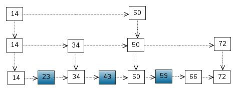

Collections In Action
Created by Li Yuntao / @dust_jead
07/15/2015
Overview
本次presentation粗略介绍jdk中常用集合类，关注其特征与实现方式
ArrayList
- 实现：以数组实现
- 优点：内存紧凑节约空间，随机读/写性能高
- 缺点：按下标插入/删除性能差，扩容问题
首次使用，创建大小为10的内部数组
/**
* Default initial capacity.
*/
private static final int DEFAULT_CAPACITY = 10;
超出当前数组容量时会扩容两倍，使用System.arrayCopy()复制到新的数组
private void grow(int minCapacity) {
// overflow-conscious code
int oldCapacity = elementData.length;
int newCapacity = oldCapacity + (oldCapacity >> 1);
if (newCapacity - minCapacity < 0)
newCapacity = minCapacity;
if (newCapacity - MAX_ARRAY_SIZE > 0)
newCapacity = hugeCapacity(minCapacity);
// minCapacity is usually close to size, so this is a win:
elementData = Arrays.copyOf(elementData, newCapacity);
}
使用建议
- 利用数组优势：多随机读写，少增删的场景
- 减少扩容开销：在预知最大容量的情况下，使用带参构造方法初始化
-
// java api List lst1 = new ArrayList(xx.size()); // guava api 传入固定大小 List lst2 = Lists.newArrayListWithCapacity(initialArraySize); // guava api 传入预估大小 List lst3 = Lists.newArrayListWithExpectedSize(estimatedSize);
LinkedList
- 实现：双向链表
- 链表节点(Node)本身使用了更多空间，和额外的指针操作
- 按下标访问get(i)/set(i,e) 会从链表的一端迭代移动指针到目标位置（i > size/2时，从尾部开始移）
- 链表两端的操作add(), addFirst(), removeLast()由于省去指针移动，性能高
使用建议
- 多增删(非按下标增删)，少随机读写的场景
- LinkedList还实现了Deque/Queue接口，是队列类型的实现类
-
Queue queue = new LinkedList();
CopyOnWriteArrayList
- 并发优化的ArrayList
- 没有读锁
- 使用Copy-On-Write策略: 其所有可变操作（add、set 等）都是通过对底层数组进行一次新的复制来实现的，代价昂贵
适用场景
多读少写场景：白/黑名单，商品类目的访问和更新
缺点
- 内存占用: 写操作进行时，被写的旧对象不会回收(被读线程利用)，占用了额外内存
- 弱一致性: 由于使用读写分离的思想，COW容器只能保证最终一致; 写入的数据不能保证马上读到
HashMap
- 以Entry[]数组实现的哈希桶数组，用Key的哈希值取模桶数组的大小可得到数组下标
- 插入时，如果两条Key落在同一个桶，Entry用一个next属性实现多个Entry以单向链表存放，后入桶的Entry将next指向桶当前的Entry
- 查找时，先通过hash(key.hashcode())定位到哈希桶，然后以链表遍历桶里所有元素，逐个比较其key值
- rehash: 当Entry数量达到桶数量的75%时，成倍扩容桶数组，并重新分配所有原来的Entry。为了规避扩容开销，最好有个预估值
JDK 1.8改动：增加阈值==8，当哈希桶挂在的链表长度超过阈值时，将链表转化为红黑树
final void treeifyBin(Node<K,V>[] tab, int hash) {
int n, index; Node<K,V> e;
if (tab == null || (n = tab.length) < MIN_TREEIFY_CAPACITY)
resize();
else if ((e = tab[index = (n - 1) & hash]) != null) {
TreeNode<K,V> hd = null, tl = null;
do {
TreeNode<K,V> p = replacementTreeNode(e, null);
if (tl == null)
hd = p;
else {
p.prev = tl;
tl.next = p;
}
tl = p;
} while ((e = e.next) != null);
if ((tab[index] = hd) != null)
hd.treeify(tab);
}
}
LinkedHashMap
扩展HashMap的Node节点, 实现为一个双向链表
iterator()时按Entry的插入顺序来排序
/**
* HashMap.Node subclass for normal LinkedHashMap entries.
*/
static class Entry<K,V> extends HashMap.Node<K,V> {
Entry<K,V> before, after;
Entry(int hash, K key, V value, Node<K,V> next) {
super(hash, key, value, next);
}
}
TreeMap
实现：红黑树
继承红黑树结构的特性，插入删除最坏耗时O(lgn)
- 支持iterator()时按Key值排序(自然序 or 比较器)
- 留意下TreeMap相对于HashMap多出的若干API
// 取最大最小Key/Entry
public K firstKey() { return key(getFirstEntry()); }
public K lastKey() { return key(getLastEntry()); }
Map.Entry<K,V> firstEntry();
Map.Entry<K,V> lastEntry();
// 取上一个下一个Key/Entry
K lowerKey(K key);
K higherKey(K key);
Map.Entry<K,V> lowerEntry(K key);
Map.Entry<K,V> higherEntry(K key);
// 减取TreeMap的片段
NavigableMap<K,V> subMap(K fromKey, boolean fromInclusive,
K toKey, boolean toInclusive);
NavigableMap<K,V> headMap(K toKey, boolean inclusive);
NavigableMap<K,V> tailMap(K fromKey, boolean inclusive);
ConcurrentHashMap
- 并发优化的HashMap
- 结构：Segment[]，每个Segment对象是一个哈希表
- 设计思想：分段思想
- 并发技术：锁分离(Lock Stripping)
- 其他(jdk 1.6)自旋锁/CAS + Immutable + Volatile(happen-before原则)
分段思想/锁分离
默认16把写锁，当多个线程的访问落在不同的段时，线程间不会存在锁竞争
// 默认16把写锁
Segment<K,V>[] segments = (Segment<K,V>[])
new Segment<?,?>[DEFAULT_CONCURRENCY_LEVEL];
/**
* Stripped-down version of helper class used in previous version,
* declared for the sake of serialization compatibility
*/
static class Segment<K,V> extends ReentrantLock implements Serializable {
private static final long serialVersionUID = 2249069246763182397L;
final float loadFactor;
Segment(float lf) { this.loadFactor = lf; }
}
ConcurrentSkipListMap
SkipList结构
SkipList搜索

Set (略)
几乎所有的Set内部都由对应的Map实现，Value是一个假值
- HashSet：内部是HashMap
- LinkedHashSet：内部是LinkedHashMap
- TreeSet：内部是TreeMap
- ConcurrentSkipListSet：并发优化的SortedSet, 内部是ConcurrentSkipListMap
- CopyOnWriteArraySet：内部是CopyOnWriteArrayList的并发优化的Set
Queue
队列的分类
- 普通FIFO队列: LinkedList/ArrayDeque
- 优先级队列: PriorityQueue
- 线程安全队列(无锁): ConcurrentLinkedQueue/ConcurrentLinkedDeque
-
线程安全队列(阻塞): ArrayBlockingQueue/LinkedBlockingQueue
LinkedBlockingDeque/PriorityBlockingQueue
ArrayDeque
- 由循环数组构成的双向队列，线程不安全
- 增删改查通常都为常数时间
- add元素：当tail指针追上head时，会扩容(×2)
使用建议
- 线程不安全
- 减少扩容开销：同ArrayList
This class is likely to be faster than Stack when used as a stack, and faster than LinkedList when used as a queue.
- 根据文档中的话，建议使用这个类全面替代LinkedList
THE END
参考文档：
Hidden Part 01: Copy-On-Write
设计思想
- 一种用于并发程序设计中的优化策略，利用高并发往往是读多写少的特性，对读操作不加锁
- 懒惰策略: 当某个人想要修改这个内容的时候，才会真正把内容Copy出去形成一个新的内容然后再改
- 读写分离: 对写操作，先复制一份新的集合，在新的集合上面修改，然后将新集合赋值给旧的引用，并通过volatile 保证其可见性
CopyOnWriteArrayList的add()
public boolean add(E e) {
final ReentrantLock lock = this.lock;
lock.lock();
try {
Object[] elements = getArray();
int len = elements.length;
// 复制出新数组
Object[] newElements = Arrays.copyOf(elements, len + 1);
// 把新元素添加到新数组里
newElements[len] = e;
// 把原数组引用指向新数组
setArray(newElements);
return true;
} finally {
lock.unlock();
}
}
整个操作是在持有锁的情况下执行的，否则多个线程可能会copy出多份副本出来。